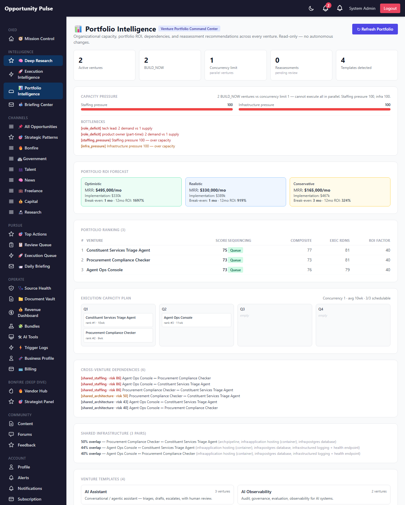
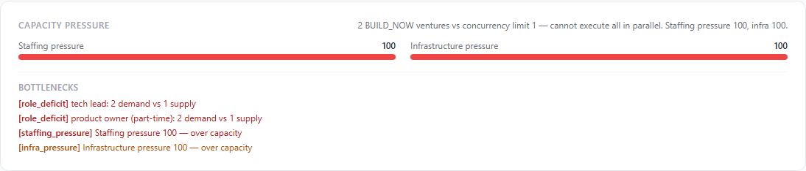

Deep Research Intelligence Engine — Phase 4
Portfolio + Capacity Intelligence · 2026-05-15 · commit 9786bbf · all 1,739 backend tests passing
Phase 1 built the infrastructure. Phase 2 added strategic intelligence. Phase 3 made it executable. Phase 4 turns the platform into portfolio intelligence: it now evaluates the venture set as a portfolio, not a list — capacity pressure, dependencies, ROI scenarios, sequencing, and confidence decay across the whole roster.
The system evolves from "can this venture succeed?" to "should this venture consume organizational capacity right now?"
On the seeded sample, the engines correctly detected that 2 BUILD_NOW ventures vs a
concurrency limit of 1 means we cannot execute all in parallel — and downgraded every
venture's sequencing recommendation from execute_now to queue. That's
the exact insight Phase 4 is built to surface: an individually-strong venture can still be a
bad portfolio pick when the org is already over capacity.
8 tables live 9 services all deterministic portfolio dashboard human-in-the-loop preserved
The Phase 4 objective
Phase 3 could tell you a venture was BUILD_NOW with execution readiness 81. What it
couldn't tell you: given everything else on the plate, is now the right time to commit org
capacity to it?
Phase 4 answers portfolio-level questions with deterministic, auditable engines: how much of the org is already committed, who's stepping on whom, what the combined ROI looks like across scenarios, which ventures can actually fit into Q1 vs Q2 vs Q3, which patterns are repeating so we can build a reusable scaffold, and where confidence has decayed enough that a venture needs re-assessment. Every recommendation surfaces to a human — nothing auto-applies.
Your feedback on the Phase 4 direction
What shipped
| # | Capability | Delivered |
|---|---|---|
| 1 | Portfolio Intelligence Dashboard | /admin/deep-research/portfolio — pressure gauges, ROI scenarios, ranking, sequencing, dependencies, recommendations, operational metrics |
| 2 | Resource Capacity Intelligence | resourceCapacity.service — deterministic role-level demand-vs-supply, bottleneck detection, concurrency limit |
| 3 | Portfolio Prioritization Engine | portfolioPrioritization.service — 7-factor deterministic ranking + sequencing recommendation |
| 4 | Shared Infrastructure Intelligence | sharedInfrastructure.service — Jaccard overlap on component fingerprints + portfolio-wide shared opportunities |
| 5 | Venture Dependency Mapping | ventureDependency.service — shared_architecture / shared_staffing / shared_ai_provider edges + sequencing constraints |
| 6 | Portfolio ROI Forecasting | portfolioForecasting.service — pricing parser + optimistic/realistic/conservative scenarios |
| 7 | Execution Capacity Planning | executionCapacityPlanner.service — slot-packed quarterly schedule + hiring recommendations |
| 8 | Venture Template Intelligence | ventureTemplate.service — 6-pattern keyword detection + aggregated MVP scaffolds + GTM playbooks |
| 9 | Confidence Decay + Reassessment | confidenceDecay.service — time-based decay + reassess/reprioritize/accelerate/monitor RECOMMENDATIONS (never auto-applied) |
| 10 | Portfolio Operational Visibility | queue pressure, venture velocity, cycle-time per stage, decision quality, readiness aging — assembled by the orchestrator |
Resource capacity engine
Deterministic. Aggregates the staffing + infrastructure demand from every active venture's Phase 3 execution readiness assessment and compares it against a configurable organizational supply (env-overridable: total headcount, per-role headcount, infra slots, average team size). Produces:
- staffing_pressure (0-100, higher = more pressure)
- infra_pressure (0-100)
- concurrency_limit — how many ventures fit into the org's headcount
- role_demand — per-role
{ demand, supply, deficit } - bottlenecks — missing roles, role deficits, aggregate pressure overloads
deterministic On the seeded sample: staffing pressure 100, concurrency 1, 2 BUILD_NOW ventures, 4 bottlenecks (tech lead + PM deficits + both pressure overloads).
Portfolio prioritization engine
Not venture scoring — that's Phase 2. This engine evaluates which ventures should consume organizational capacity right now. A strong individual venture can still be a poor portfolio pick if capacity is already strained or a better-positioned venture should go first.
Seven factors with a defined weight model:
| Factor | Weight | Source |
|---|---|---|
composite_score | 0.20 | Phase 2 venture scoring |
execution_readiness | 0.25 | Phase 3 execution readiness |
decision_weight | 0.15 | Phase 3 build-vs-monitor |
roi_potential | 0.15 | Phase 4 ROI forecast (12mo) |
resource_pressure_penalty | -0.10 | Phase 4 capacity snapshot |
infrastructure_reuse_bonus | +0.05 | Phase 4 overlap analysis |
timing_alignment | 0.10 | Phase 2 market stage |
Sequencing maps the score + decision into one of execute_now / queue /
defer / monitor / pass. The rationale lists the top
contributing factors, so the rank is traceable.
deterministic Resource pressure 100 correctly downgraded all 3 BUILD_NOW seeded ventures from execute_now to queue.
Shared infrastructure intelligence
Deterministic. Builds a component fingerprint per venture by combining the Phase 3 infrastructure items, the MVP plan's suggested stack + AI components, and architecture signature tokens extracted from the suggested-architecture text. Compares every pair via Jaccard similarity, persisting only pairs with meaningful overlap.
Beyond pairs, it identifies shared build opportunities — components used by 3+ ventures, the candidates for a shared service that reduces duplicate execution effort. On the seeded sample: 3 pairs + 4 shared opportunities.
deterministic
Venture dependency mapping
Deterministic. Three flavors of edge per pair:
- shared_architecture — both need the same components (from the overlap analysis)
- shared_staffing — both need the same roles (scarce roles weigh heavier)
- shared_ai_provider — both rely on the same AI provider (cascade-risk if it outages)
Each edge carries a risk_score reflecting cascading-failure / contention risk. The service also derives sequencing_constraints — pairs that should not run in parallel because they'd contend for the same scarce resource. On the seeded sample: 6 edges, 3 sequencing constraints.
ROI forecasting engine
Deterministic. Pricing is parsed from monetization-model text strings (regex extraction of dollar amounts + k/m suffixes + unit detection: monthly / annual / project) to estimate per-customer MRR; combined with a default customer count to produce the realistic MRR baseline. Costs are computed from staffing (headcount × weekly rate × MVP timeline weeks) + infrastructure (items × monthly rate × 12).
Three scenarios — honest multipliers applied to the same realistic baseline:
| Scenario | MRR multiplier | Cost multiplier |
|---|---|---|
| Optimistic | ×1.5 | ×0.85 |
| Realistic | ×1.0 | ×1.0 |
| Conservative | ×0.5 | ×1.2 |
Each scenario produces projected_mrr, implementation_cost,
breakeven_months, and 12-month ROI. Rolled up across all ventures for the portfolio
view. On the seeded sample: realistic portfolio MRR $330,000/mo.
deterministic
Execution capacity planning
Deterministic. Walks the priority-sorted ranking and packs each schedulable venture into the
next-available concurrency slot, using its MVP-timeline-weeks. Ventures recommended
monitor or pass are not scheduled. The output is a
quarter-by-quarter plan showing which venture lands when, plus translated
hiring recommendations from the role deficits.
Venture template intelligence
Deterministic. Six built-in template patterns (AI Assistant, Workflow Automation, AI Education, Government Intelligence, AI Orchestration, AI Observability) detected by keyword signature matching against venture title + description. For each pattern with matching ventures, the engine aggregates:
- MVP scaffold — common phase-1 features, stack, AI components, typical staffing + timeline (frequency-counted across the matching ventures' Phase 3 MVP plans).
- GTM playbook — common channels, exemplar ICP + pricing + pilot strategy (from the matching ventures' launch strategies).
Goal: a new venture matching an existing template inherits a battle-tested scaffold — compresses future execution time.
Confidence decay + reassessment
Deterministic. Confidence in a venture decays over time as the signals underneath it grow stale. Three decay sources:
- age_decay — days since the last assessment (after a 30-day grace, 0.01/day)
- stuck_decay — days in a stuck-prone lifecycle state (after a 21-day grace, 0.008/day)
- decision_pressure_decay — BUILD_NOW ventures left sitting past the grace window decay extra
On every pass the engine writes a confidence_history row and emits a
reassessment recommendation when warranted: accelerate /
reassess / reprioritize / monitor. These are
recommendations only — surfaced on the dashboard for a human to acknowledge or
dismiss. The system never auto-transitions a venture.
deterministic human-in-the-loop
Portfolio intelligence orchestrator
portfolioIntelligence.service runs every engine in dependency order on a
POST /portfolio/refresh: capacity → overlaps → dependencies → forecasts →
prioritization (consumes capacity + forecasts) → plan (consumes ranking) → templates → decay.
Each step's failure is captured and the run continues — fault-tolerant orchestration over
fragile coupling.
Operational visibility
Derived reads, no engine. The dashboard surfaces:
- venture velocity — lifecycle transitions per 7d / 30d
- queue pressure — active queue items, BUILD_NOW count, pending recommendations
- cycle time per stage — median days a venture spends in each lifecycle state
- decision quality — % of BUILD_NOW ventures that progressed past approval
- readiness aging — median assessment age, stale-count vs grace
Screen — the portfolio dashboard

The full dashboard — health stats, capacity pressure (at 100), ROI scenarios across all three, the priority-sorted ranking, the quarter-by-quarter capacity plan, cross-venture dependencies, shared infrastructure, and venture templates.
Feedback
Screen — capacity pressure

The capacity pressure section — staffing + infrastructure both at 100 (red), the rationale spelling out "2 BUILD_NOW vs concurrency 1 — cannot execute all in parallel", and the bottleneck list (role deficits + pressure overloads).
Database schema
Migration 20260515000001-deep-research-phase-4.js — 8 tables, applied live on prod. No changes to Phase 1-3 schema.
portfolio_scores per-venture ranking output (factors + sequencing + rationale) resource_capacity_snapshots time-series capacity (pressures, concurrency, bottlenecks) venture_dependencies shared_arch / shared_staffing / shared_ai_provider edges infrastructure_overlap per-pair overlap_score + shared_components roi_forecasts per-scenario MRR + costs + breakeven + ROI (venture + portfolio) confidence_history time series of computed confidence per venture reassessment_events decay-driven recommendations (pending → acknowledged | dismissed) venture_templates detected patterns + aggregated MVP scaffolds + GTM playbooks
API routes
POST /api/v1/deep-research/portfolio/refresh run every Phase 4 engine GET /api/v1/deep-research/portfolio the assembled dashboard GET /api/v1/deep-research/portfolio/capacity latest capacity snapshot GET /api/v1/deep-research/portfolio/ranking latest portfolio ranking GET /api/v1/deep-research/portfolio/forecasts latest ROI forecasts GET /api/v1/deep-research/portfolio/overlaps per-pair infrastructure overlap GET /api/v1/deep-research/portfolio/dependencies the dependency graph GET /api/v1/deep-research/portfolio/plan execution capacity plan GET /api/v1/deep-research/portfolio/templates detected venture templates GET /api/v1/deep-research/portfolio/recommendations pending reassessment recommendations POST /api/v1/deep-research/portfolio/recommendations/:id/acknowledge POST /api/v1/deep-research/portfolio/recommendations/:id/dismiss GET /api/v1/deep-research/portfolio/operations operational visibility metrics
Files changed
New — backend
backend/src/migrations/20260515000001-deep-research-phase-4.js
backend/src/models/{PortfolioScore,ResourceCapacitySnapshot,VentureDependency,
InfrastructureOverlap,RoiForecast,ConfidenceHistory,ReassessmentEvent,VentureTemplate}.js
backend/src/deepResearch/resourceCapacity.service.js
backend/src/deepResearch/portfolioPrioritization.service.js
backend/src/deepResearch/sharedInfrastructure.service.js
backend/src/deepResearch/ventureDependency.service.js
backend/src/deepResearch/portfolioForecasting.service.js
backend/src/deepResearch/executionCapacityPlanner.service.js
backend/src/deepResearch/ventureTemplate.service.js
backend/src/deepResearch/confidenceDecay.service.js
backend/src/deepResearch/portfolioIntelligence.service.js
backend/scripts/capture-deep-research-phase-4-walkthrough.js
backend/tests/deepResearch/{resourceCapacity,portfolioPrioritization,sharedInfrastructure,
ventureDependency,portfolioForecasting,executionCapacityPlanner,ventureTemplate,
confidenceDecay}.test.js
New — frontend
frontend/src/pages/PortfolioDashboardPage.jsx the venture portfolio command center frontend/src/components/deepResearch/PortfolioVisuals.jsx gauges / ROI / dependencies / quarter plan
Modified
backend/src/deepResearch/deepResearch.controller.js + .routes.js Phase 4 endpoints backend/src/models/index.js frontend/src/services/deepResearchService.js · App.jsx · components/common/Sidebar.jsx
~50 new tests; full suite 155 suites / 1,739 tests passing.
Validations performed
| # | Check | Result |
|---|---|---|
| 1 | Portfolio dashboard works | ✅ renders all sections with live data (screenshots p4-01..04) |
| 2 | Capacity calculations stable | ✅ seeded sample → staffing/infra pressure 100, concurrency 1, 4 bottlenecks correctly identified |
| 3 | Prioritization deterministic | ✅ 7-factor model tested across all decision paths + repeatability |
| 4 | Shared infra detection works | ✅ seeded sample → 3 pairs + 4 shared opportunities |
| 5 | Dependency mapping stable | ✅ 6 edges (shared_arch / shared_staffing / shared_ai_provider), 3 sequencing constraints |
| 6 | ROI forecasting works | ✅ pricing parser tested across $/mo / $/yr / project; 3 scenarios persisted; realistic portfolio MRR $330k/mo |
| 7 | Capacity planning works | ✅ priority-sorted slot packing + quarter assignment; hiring recs from deficits |
| 8 | Template detection works | ✅ 4 templates detected on the seeded sample (ai_assistant + gov_intelligence + others) |
| 9 | Confidence decay works | ✅ no false-positive recommendations on fresh assessments; recommendations emitted only above thresholds |
| 10 | Reassessment works | ✅ acknowledge / dismiss endpoints + UI actions; no autonomous lifecycle changes |
| 11 | Existing execution systems preserved | ✅ full suite 155 suites / 1,739 tests green; all Phase 3 routes + services unchanged |
| 12 | Existing lifecycle systems preserved | ✅ no schema changes to Phase 3 tables; lifecycle tests still pass |
| 13 | Existing venture scoring preserved | ✅ Phase 2 venture scoring untouched; portfolio prioritization is a separate, layered concern |
Mid-build fix: Sequelize toJSON returns camelCase attribute names; the dashboard initially read snake_case DB column names so pressures rendered as 0. Switched to camelCase + enriched getLatestRanking with a venture-title join — re-captured screenshots show the correct numbers.
Known limitations
- Pricing parser is regex-based. It handles the common formats well ($X/seat/mo, $X-Y k pilot, $X.YM ARR) but won't catch every exotic structure. When parsing fails, the venture gets a zero-MRR forecast — honest but conservative.
-
Default organizational supply is a small-team heuristic. Configurable via
env (
DEEP_RESEARCH_ORG_HEADCOUNT,DEEP_RESEARCH_ORG_ROLES,DEEP_RESEARCH_ORG_INFRA_CAPACITY) — each deployment should set its own roster. -
Templates are keyword-based. Six built-in patterns; extending is one append
to the
TEMPLATESconstant. A misclassification is harmless — the template just gathers a slightly different bucket of MVP plans. -
Decay does not auto-act. By design — recommendations only. A future phase
could add a scheduled
runDecayPasscron, but acting on the recommendation stays human. - Dependency graph is undirected. shared_* edges are symmetric. Directional dependencies (A blocks B) would need explicit modelling and aren't yet in scope.
-
Portfolio refresh runs are not yet scheduled. Triggered manually from the
dashboard's Refresh button (or the
POST /portfolio/refreshendpoint). A nightly cron is a small addition for Phase 5.
Recommended Phase 5
- Schedule the portfolio refresh + the confidence-decay pass. Daily cron, opt-in like every other Phase 1-4 scheduler. The engines are deterministic + cheap (no AI) — safe to run unattended.
- Wire a healthy AI provider (Anthropic fallback). Still the highest-leverage step across the whole engine — Phase 2 + 3 AI pieces become live-validatable, MVP plans + launch strategies finally render with real content on the seeded sample.
- Directional dependencies. "Venture B can't start until A ships X" — explicit blocker modelling. Today's shared_* edges cover contention but not strict precedence.
-
Portfolio history. The data is already there (
portfolio_scoresandresource_capacity_snapshotsare time-series tables) — surface capacity-pressure-over-time + ranking-changes-over-time charts. - Real Agent Foundry integration. The Phase 3 client is built and waiting; set the env vars and it switches on.
- Suggested portfolio actions. The dashboard could pair its recommendations with concrete suggested next moves ("hire 2 tech leads to unblock Q1 ventures 1+3") — still surfaced for human approval.
Final notes
Phase 4 is shipped and deployed. All nine engines run deterministically + auditable. The
portfolio dashboard is live on prod, all 8 tables seeded, the orchestrator returns
ok=true with the seeded ventures correctly assessed, ranked, and queue-deferred due
to capacity pressure. The full backend suite — 1,739 tests — is green.
Human-in-the-loop is preserved end to end. Confidence decay surfaces recommendations; lifecycle transitions are still manual; the prioritization engine ranks but never moves a venture; the capacity plan suggests sequencing but never schedules. Every score traces back to its factor inputs, and the rationale is on every output row.
Anything not captured anywhere above: